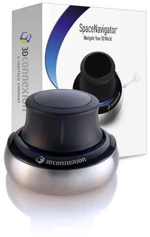
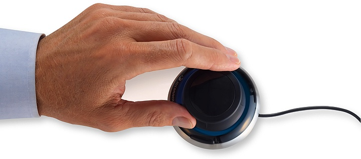
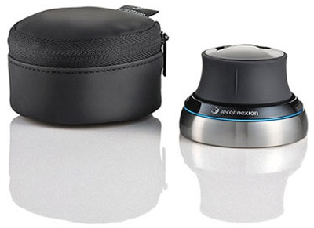
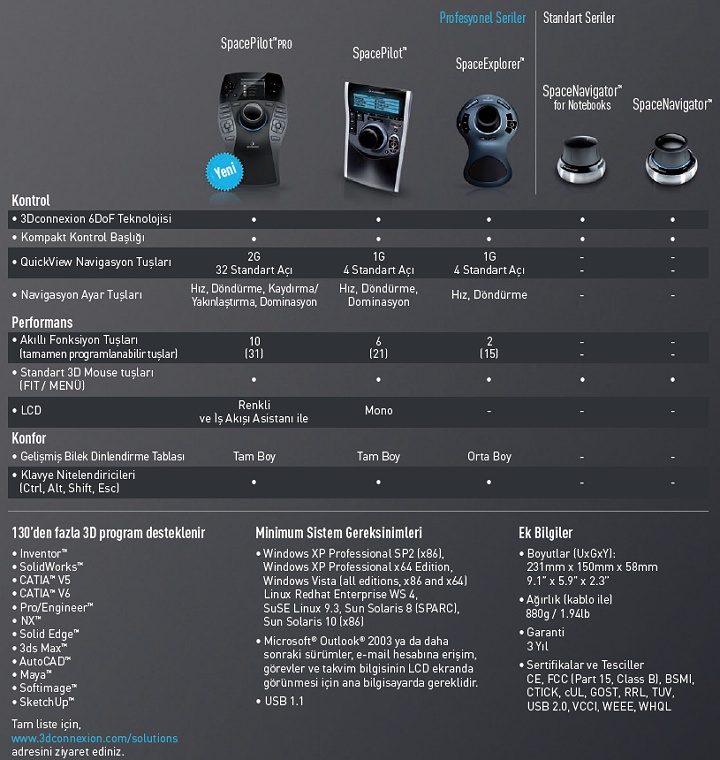

|
SpaceNavigator
Üstün 3D Navigasyon Deneyimi
SpaceNavigator her boyutta kolay navigasyonu destekler. SpaceNavigator ile, modelinizi her þekilde konumlandýrýrsýnýz - döndürme, kaydýrma, yakýnlaþtýrma, akýcý hareketler. 3D mouse geleneksel mouse'lara eþlik edecek þekilde, boþ olan el aracýlýðýyla kullanýlýyor. Mouse için olan eliniz, eþ zamanlý olarak modeli düzenlemek için ya da menü seçimleri için özgür.
Sanal Uzantýnýz
3D modellerinizi kontrol etmek için SpaceNavigator 3D Mouse kullanmak, onlarý elinizde tutmak kadar kolay. Özel tuþuna parmak uçlarýnýzla yapacaðýnýz hafif hareketler, 3D objelerinize keskin ve kolay kontrol imkaný sunar.
Her Bütçe Ýçin
Rekabetçi bir fiyatta, ideal bir giriþ seviyesi 3D mouse.
Güçlü, Kullanýmý Kolay
3D deneyiminin tadýný çýkarmak isteyen herkes için, geliþmiþ 3D navigasyon
SpaceNavigator videosu için: www.flixfacts.co.uk/....3dconnexion-3dx-700028
Daha fazla bilgi için: www.3dconnexion.com/products/spacenavigator.html

SpaceNavigator for Notebooks
Çift Elin Gücü
SpaceNavigator for Notebooks klasik fare ile birlikte kullanýlmaktadýr. Bir el SpaceNavigator for Notebooks ile navigasyon iþlemlerini yürütürken diðer eliniz klasik fare ile seçme, yaratma ve düzenlemeyle ilgilenir. Bu dengeli ve efektif çalýþma þekli, %20'den fazla üretkenlik artýþý, %50'ye kadar daha az fare týklamasý ve daha konforlu bir çalýþma ortamý saðlarken, bilek aðrýsý (RSI) riskini azaltýr.
Sanal Uzantýnýz
3Dconnexion'ýn 6-Açýlý-Özgürlük (6DoF) patentli kontrol baþlýðýný, modelinizi eþ zamanlý olarak döndürmek, kaydýrmak ya da modelinize yakýnlaþmak için, basitçe itin, çekin, çevirin ya da eðin. Daha hýzlý hareket etmek için daha güçlü bastýrýn ya da karýþýk düzenlemeleri yapmak için daha yavaþ bastýrýn. Bu gerçekten modele ulaþýp onu elinizde tutmanýzý saðlayacak en kýsa yoldur.
SpaceNavigator for Notebooks videosu için:
www.flixfacts.co.uk/.....3dconnexion-3dx-700034
Daha fazla bilgi için:
www.3dconnexion.com/products/spacenavigator-for-notebooks.html
Yazýlýmým 3Dconnexion 3D Fare ile uyumlu mu?
130'den fazla 3D program desteklenir:
. AutoCAD
. CATIA V5
. CATIA V6
. Inventor
. Maya
. NX
. Pro/ENGINEER
. SketchUp
. Softimage
. Solid Edge
. SolidWorks
. 3ds Max
Tam liste için, www.3dconnexion.com/solutions ziyaret ediniz.
Nasýl Satýn Alabilirim?
Turkiye'de bir çok bayimiz mevcuttur. Liste için:
www.3dconnexion.com/buy/locate-a-reseller.html
Test Ýmkaný:
Eðer ürünlerimizi test etmek isterseniz, listede yer alan bayilerimizle
ya da bizimle (eesales@3dconnexion.com) iletiþime geçebilirsiniz.
Teknik Destek:
Eðer herhangi bir konuda yardýma ihtiyacýnýz olursa, teknik destek grubumuz size sürekli telefon ya da e-posta aracýlýðý ile yardým ediyor olacak. Yapmanýz gereken tek þey, teknik destek sayfamýza gitmeniz ve probleminizi tanýmlamanýz. Daha sonra profesyonel destek ekibimiz, en basit ve hýzlý çözümü sunmak için çalýþýyor olacak. Teknik destek linkimiz:
www.3dconnexion.com/service/technical-support.html
Forum
Daha fazla bilgi sahibi olmak ya da 3Dconnexion kullanýcýlarýnýn görüþlerini okumak istiyorsanýz, web sitemizdeki forumumuzu ziyaret edebilirsiniz:
www.3dconnexion.com/forum/index.php
Baþarý Hikayeleri
3Dconnexion'un müþterileri arasýnda, üstün tasarým gerekleri olan Boeing, Bosch, Skoda, Porsche, TAI, Ferrari, Bell Helicopter ve Volkswagen gibi dünyanýn en büyük þirketleri yer almakta...
Skoda ve Douglas SPD'nin 3Dconnexion deneyimleri için:
www.3dconnexion.com/company/customer-stories.html

Daha fazla bilgi için:
www.3dconnexion.com
Bayi listesi: www.3dconnexion.com/buy/locate-a-reseller.html
Her türlü sorunuz için bizimle iletiþime geçebilirsiniz;
eesales@3dconnexion.com
|